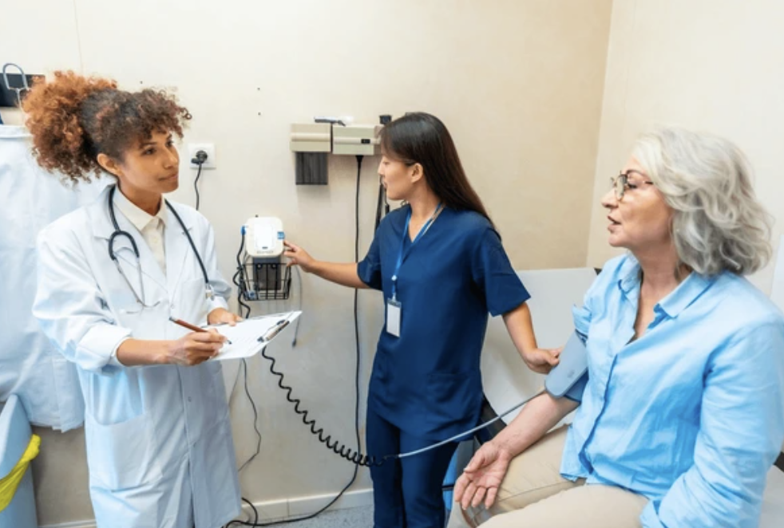
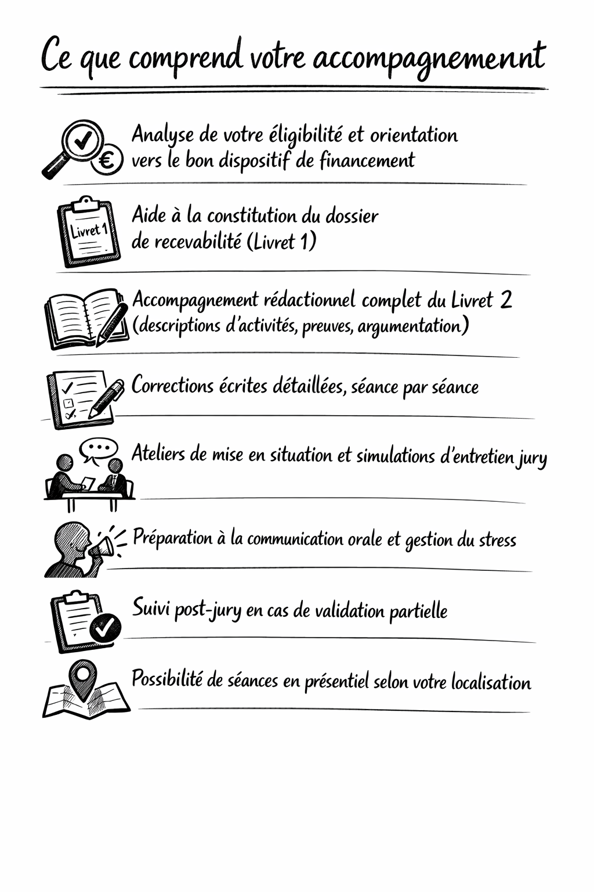

VAE Formation vous accompagne pour obtenir le CQP Assistant Médical en valorisant votre expérience professionnelle. Sans reprendre une formation longue. Sans quitter votre poste.
VAE Formation en chiffres
💡 Financement possible à 100% via votre CPF, votre OPCO EP ou le plan de développement des compétences de votre employeur.
La Validation des Acquis de l'Expérience (VAE) est un droit légal inscrit dans le Code du travail. Elle vous permet d'obtenir une certification professionnelle officielle — le CQP Assistant Médical — en valorisant votre expérience terrain, sans reprendre une formation complète.
Concrètement : vous rédigez un dossier qui décrit vos activités professionnelles et les compétences que vous avez développées. Un jury évalue ce dossier et valide votre certification. Votre diplôme aura exactement la même valeur juridique que celui obtenu par la voie classique.
Chez VAE Formation, nous sommes à vos côtés à chaque étape : de la vérification de votre éligibilité jusqu'à la préparation de votre soutenance devant le jury.
Le CQP Assistant Médical est inscrit au RNCP sous le numéro 40913, délivré par la CPNEFP des cabinets médicaux. Il est reconnu nationalement et vous ouvre les portes de l'exercice légal du métier.
Vous valorisez ce que vous savez déjà faire. Pas besoin de retourner sur les bancs de l'école des mois durant.
Le CQP obtenu par VAE a exactement la même valeur légale que celui obtenu par la formation initiale classique.
CPF, OPCO EP, plan de développement des compétences : plusieurs dispositifs peuvent couvrir l'intégralité des frais.
Nos accompagnateurs vous suivent à distance, au rythme que vous définissez ensemble, depuis n'importe quelle région.
Créé par le plan Ma Santé 2022, l'assistant médical est le nouveau pilier des cabinets médicaux. Sans être un professionnel de santé réglementé, il accompagne le médecin dans ses missions quotidiennes — libérant du temps médical précieux et améliorant l'accès aux soins. La convention médicale 2024 vise 15 000 assistants médicaux en poste d'ici 2029.

Accueil des patients, création et gestion du dossier informatique, enregistrement des informations médicales et administratives, déploiement de la télémédecine.
Aide à l'habillage / déshabillage, prise des constantes (tension, poids, taille), mise à jour des dépistages et vaccinations, délivrance des tests et kits.
Gestion du risque contaminant, identito-vigilance, pharmacovigilance, entretien des équipements médicaux, gestion des stocks.
Organisation des rendez-vous spécialistes, liaisons avec hôpitaux et autres professionnels de santé, accompagnement des patients atteints de pathologies chroniques.
Pour engager une VAE en vue du CQP Assistant Médical, vous devez réunir les conditions suivantes. Si vous avez le moindre doute, notre équipe effectue gratuitement une analyse de votre éligibilité.
Le CQP Assistant Médical (RNCP 40913), certification de niveau 4, valable jusqu'au 25 juin 2030 et délivrée par la CPNEFP des cabinets médicaux.
Il ouvre le droit à l'exercice légal du métier d'assistant médical en cabinet médical, conformément à l'arrêté du 7 novembre 2019.
En cas de validation partielle, vous conservez définitivement les blocs déjà validés. Vous pouvez compléter les blocs manquants lors d'une session ultérieure ou par formation complémentaire.
Vous n'êtes pas sûr(e) de remplir les conditions ?
Diagnostic gratuit d'éligibilité →Un parcours structuré, clair, avec un accompagnateur dédié à chaque étape. Durée totale : 9 à 12 mois selon votre disponibilité.
Analyse gratuite de votre parcours et vérification de l'adéquation avec le référentiel CQP.
Gratuit · J+0Constitution du Livret 1 et dépôt de la demande auprès de la CPNEFP des cabinets médicaux.
~4 à 8 semainesAccompagnement personnalisé pour la rédaction de votre dossier de validation : activités, compétences, preuves.
4 à 6 moisSimulations d'entretien jury, préparation orale, gestion du stress et valorisation de votre parcours.
4 à 6 semainesSoutenance orale de 45 minutes devant le jury paritaire de la CPNEFP. Délibération et remise du CQP.
Diplôme !Chez VAE Formation, chaque candidat est suivi par un accompagnateur dédié, professionnel du secteur médical et certifié AAP (Architecte Accompagnateur de Parcours).
Vous êtes suivi par le même professionnel du début à la fin. Votre accompagnateur connaît votre dossier sur le bout des doigts et reste disponible par mail et par téléphone.
Le calendrier est co-construit avec vous. Entretiens en visioconférence, échanges par e-mail entre les séances, corrections écrites détaillées de votre livret.
Nos accompagnateurs maîtrisent précisément les blocs de compétences 1, 2 et 4 du CQP Assistant Médical. Ils savent ce que le jury attend — et vous le transmettent.

La VAE Assistant Médical bénéficie d'une prise en charge financière solide. Dans la majorité des cas, les candidats salariés d'un cabinet médical n'avancent pas un euro. Voici les principaux dispositifs disponibles.
Mobilisez vos droits CPF pour financer l'intégralité de votre accompagnement VAE, les frais de jury et les éventuelles formations complémentaires (dont l'AFGSU). Éligible depuis le décret du 18 juillet 2025.
L'OPCO EP finance à 100% les parcours VAE des salariés de cabinets médicaux (IDCC 1147) selon le barème de branche. C'est souvent la solution la plus simple pour les secrétaires médicales déjà en poste.
Votre employeur peut financer votre VAE dans le cadre de son plan de formation annuel. Un congé VAE de 48 heures maximum avec maintien du salaire peut également être accordé.
Notre équipe vous aide à identifier le meilleur dispositif de financement adapté à votre situation dès le premier entretien. Dans la majorité des cas, votre accompagnement ne vous coûte rien.
J'étais secrétaire médicale depuis 8 ans sans diplôme reconnu. Grâce à VAE Formation, j'ai pu valoriser tout ce que je faisais au quotidien. Mon accompagnatrice a été d'une aide précieuse pour structurer mon dossier. J'ai obtenu mon CQP en première présentation.
Je travaillais comme aide-soignante en EHPAD et je voulais rejoindre un cabinet de médecine générale. La VAE m'a permis de faire reconnaître mes compétences transversales. Le tout en distanciel, sans quitter mon poste. Je recommande à 100%.
Le financement via l'OPCO EP s'est fait sans aucune avance de ma part. Mon accompagnateur a géré les démarches administratives avec moi. En 10 mois, j'avais mon diplôme. C'est le meilleur investissement pour ma carrière.
Prenez 5 minutes pour nous parler de votre parcours. Nous vous disons si vous êtes éligible — gratuitement, sans engagement.
Notre équipe vous répond sous 48 heures ouvrées. Lors de ce premier échange, nous analysons gratuitement votre éligibilité et vous orientons vers le meilleur dispositif de financement.
Merci . Notre équipe analyse votre dossier et vous contacte sous 48h ouvrées pour votre diagnostic d'éligibilité gratuit.